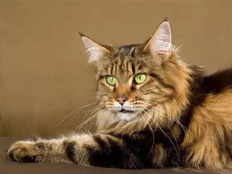

The type of cat i want to adopt is a mancoon cat. I started to like mainecoons from the way they look.' Mainecoons can grow to be very long and have excess shedding, which sounds like a lot but it's worth it to having a pet for me to love.
I have a few bullet points on why i think i need a mainecoon listed below.
"Maine Coons are known for their gentle giants reputation, but they can be sensitive to overstimulation and discomfort." © Maine Coon Central
